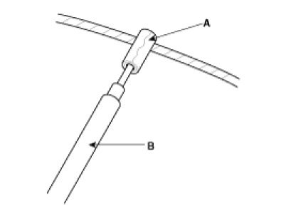
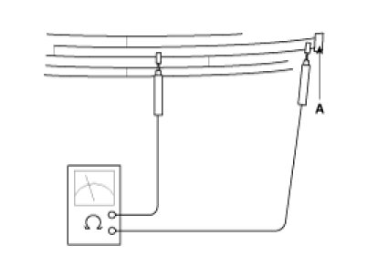
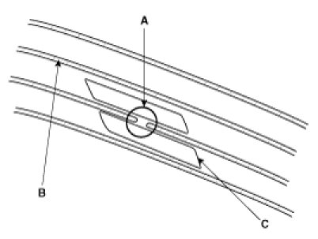
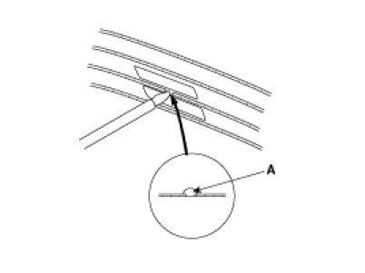
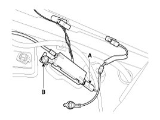
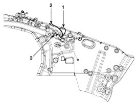
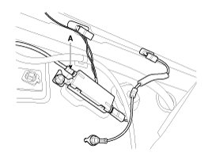
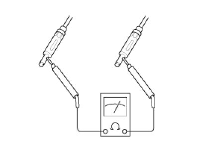
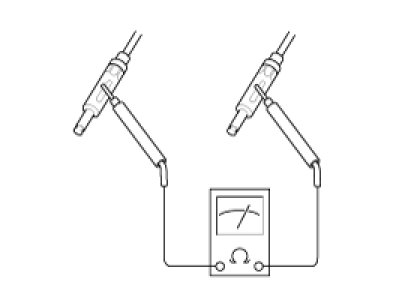
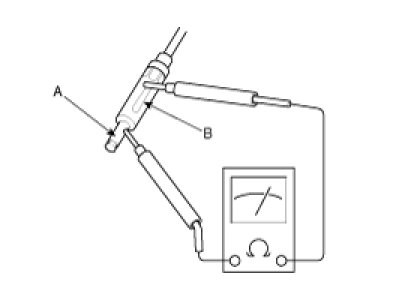

Antenna, Radio: Testing and Inspection
Inspection
Glass Antenna Test
1. Wrap aluminum foil (A) around the tip of the tester probe (B) as shown.

2. Touch one tester probe to the glass antenna terminal (A) and move the other tester probe along the antenna wires to check that continuity exists.

Glass Antenna Repair
NOTE:
To make an effective repair, the broken section must be no longer than one inch.
1. Lightly rub the area around the broken section (A) with fine steel wool, and then clean it with alcohol.

2. Carefully mask above and below the broken portion of the glass antenna wire (B) with cellophane tape (C).
3. Using a small brush, apply a heavy coat of silver conductive paint (A) extending about 1/8"on both sides of the break. Allow 30 minutes to dry.
NOTE:
Thoroughly mix the paint before use.

4. Check for continuity in the repaired wire.
5. Apply a second coat of paint in the same way. Let it dry three hours before removing the tape.
Glass Antenna Circuit Inspection
1. Remove the right side rear quarter trim.
Then disconnect the antenna feeder cable from the glass antenna amp.
2. Turn the radio ON.
Measure the voltage between the harness side (A) and body ground (B).
OK :approximately 12V (ACC+)

3. Check for FM wire resistance between terminals of No.1 and 3
1. FM antenna grid terminal
2. AM antenna grid terminal
3. Body ground.

Standard value :80 - 120KOhms
Short :Approx. 0Ohms
Open :Infinity Ohms
4. Check for AM wire resistance between terminals of No.2 and 3.
Standard value :120 - 170KOhms
Short :Approx. 0Ohms
Open :Infinity Ohms
5. Check the grid lines for continuity.
6. When a poor radio reception is not repaired through the above inspection methods, replace the amp.
If the radio reception is still poor, check the radio cable for short and radio head unit for failure.
Antenna Cable
1. Remove the antenna jack (A) from the audio unit and antenna.

2. Check for continuity between the center poles of antenna cable.

3. Check for continuity between the outer poles of antenna cable. There should be continuity.

4. If there is no continuity, replace the antenna cable.
5. Check for continuity between the center pole (A) and outer pole (B) of antenna cable. There should be no continuity.

6. If there is continuity, replace the antenna cable.